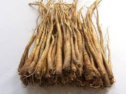
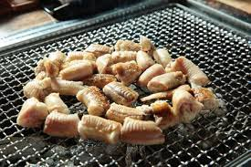
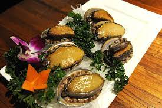

여름 제철음식
갈치

조림·구이·찌개 등 다양하게 조리 가능한 국민생선 갈치는 7월이 제철이다.
갈치에는 무기질과 칼슘 성분이 풍부해 근육과 뼈 건강에 좋다.
또 비타민·단백질·필수지방산을 다량 함유해 피부 건강과 성인병 예방에 좋은 식재료다.
갈치에는 등푸른생선 못지않은 EPA, DHA가 함유돼 있어 두뇌발달과 치매 예방에 좋다.
갈치는 신선도에 따라 은색비늘에서 특유의 비린내가 날 수 있다.
비늘을 미리 제거하고 조리하는 것이 좋다. 또 몸을 덮고 있는 은백색 가루는 영양이 없고 소화를 방해하므로 깨끗이 긁어내고 조리한다.
음식:조림,찜,구이 등
도라지

면역력에 관심이 부쩍 높아진 요즘, 자주 등장하는 도라지. 제철을 맞은 도라지에는 사포닌 성분이 풍부해 노폐물 제거와 면역력 강화에 좋고, 혈액순환을 돕는다.
도라지에는 식이섬유와 철분이 풍부해 혈당 관리와 빈혈에도 효과적이다.
도라지는 따뜻한 성질을 가지고 있어 기관지 및 호흡기 건강관리에 좋다.
도라지는 잔뿌리가 많고 원뿌리가 갈라진 것이 좋다.
쓴맛을 제거하려면 물에 충분히 담근 뒤 조리한다. 꿀과 함께 먹으면 효과적이다.
음식: 도라지 오이 무침
민어

기력회복, 피부미용,성장발육,혈관질환예방,뇌건강,뼈건강,다이어트에 좋다.
음식: 민어찜, 민어조림, 민어탕, 민어회 등
보구치(조기)

보구치 즉'백조기'는 7월부터 어획량이 늘어난다. 살은 무른편이어서 횟감으로는 큰 인기는 없다.
조기에는 비타민 D와 비타민 B군이 풍부해 면역력 높이고 축적된 피로를 해소한다.
음식: 조기찜, 조림, 매운탕이나찌개
돌문어(참문어)

저칼로리 고단백식품이다. 문어에는 '타우린'이 풍부한데 이'타우린'은 혈액 속 중성지방
콜레스테롤을 낮추는데 좋고,피로 및 숙취에도 효과가 있으며,인슐린의 분비촉진으로
당뇨 예방과 간 해독 기능도 탁월한 것으로 알려졌습니다. 한방에는 시력회복 및 성인병 빈혈에 좋다고 한다.
음식: 숙회,구이,초밥 등
곰장어

식당에서 먹는거 추천 특히 국산은 부산에 있음 부산에서 먹어보는 거 추천
그 밖의 해산물 한치,성게,갯장어 이런건 지역특산에서 먹어야..
전복

8월/ 전복은 대표적인 스태미나 음식이다. 미역과 다시마, 곰피 등의 해조류를 먹고 살기 때문에
그 영양분이 고스란히 내장에 축적됩니다. 고단백 저칼로리, 저지방 음식으로 비타민 함량이 많고,
칼슘과 인, 각종 무기질이 풍부하기 때문에 다이어트는 물론, 산후조리 음식에 개꿀임
음식: 구이,숙회,죽 등
블루베리

세계 10대 슈퍼푸드 중 하나인 블루베리는 한여름이 제철이다. 블루베리가 품고 있는 풍부한 안토시아닌 성분은 항산화 작용으로 노화 방지 효과가 있고 시력보호 및 눈 건강에 좋다.
또 다량의 프테로틸벤 성분이 있어 콜레스테롤을 낮춰 준다. 블루베리 내 섬유질은 대장암 예방과 변비에 좋다.
짙은 청색에 겉면이 팽팽하고 흰가루가 고르게 묻어 있는 것이 좋다. 성인기준 하루 20알 정도 먹는 것이 적당하다. 당분이 많이 들어 있어 과하게 먹으면 당 섭취 과다를 부를 수 있다.
꽈리고추
손질이 쉽고 영양이 풍부한 꽈리고추는 여름이 제철이다.
꽈리고추에는 면역력을 높이고 혈액순환을 돕는 감마아미노산낙산, 루틴, 비타민 성분이 풍부하다.
또 자연 캡사이신 성분을 다량 함유해 위액 분비를 촉진하고 식욕을 돋우며 항산화 효과가 있다.
연녹색에 쭈글쭈글한 굴곡이 있고 꼭지가 신선한 것이 좋다. 닭고기와 함께 조리하면 닭고기의 부족한 비타민을 보충하고 식재료 궁합도 잘 맞다.
복숭아
달콤한 향에 비타민과 식이섬유, 수분이 풍부해 여름철 즐겨 찾는 복숭아. 식이섬유와 펙틴 성분을 함유해 장을 부드럽게 하고 변기에 좋고 피부미용에 효과적이다. 복숭아 내 젖산 분해 효소는 피로물질을 배출하고 회복에 좋은 영향을 준다.
황도는 당도가 비교적 낮고 베타카로틴 성분을 다량 함유하고 있다. 기름에 살짝 구워 먹으면 효능 흡수가 더 잘된다. 껍질째 먹는 것이 좋다. 천도에는 비타민A의 전구체인 카로틴이 풍부하다.
상처가 없이 알이 크고 향기가 강한 것이 좋다. 보관 시 0~1도 정도의 냉장실이 가장 좋다.
수박 화채

수박은 90% 이상이 수분이지만 이외에 비타민A, B1, B2, C와 칼슘, 칼륨, 철분 등의 무기질과 글루타민산,
알기닌 등의 아미노산도 많이 함유되어있다. 또한 포도당, 과당 등 당질이 풍부하여 단맛이 나며 여름 생식용이나 샤벳트로 만들어 먹기에 좋다.
감자

7월~8월/ 비타민 C. 비타민 C는 오렌지와 같은 감귤류 과일에 풍부하게 들어있는 것으로 잘 알려져 있다. ...
비타민 B6
칼륨
콜린
위장 건강 증진
천연 글루텐 프리
나트륨 배출에 도움을 주며 고혈압 환자에 혈압조절에 도움
음식:감자옹심이
옥수수
7~8월/ 고혈압 예방을 도울 수 있답니다.
나쁜 LDL 콜레스테롤 수치 개선을 도울 수 있답니다.
심혈관 건강을 돕는 작용이 있답니다.
당뇨병 발병 위험도를 낮출 수 있답니다.
염증을 줄여 다양한 질병 치료를 도울 수 있답니다.
알츠하이머 등 노인성 뇌 질환 예방을 도울 수 있답니다.
토마토

7월/ 토마토가 몸에 좋은 이유는 소화를 돕는 것에서 끝나지 않는다. 토마토에는 피로를 풀고 신진대사를 돕는 비타민 C와 지방 분해를 돕는 비타민 B,
항산화 작용으로 노화를 막는 리코펜, 고혈압을 예방하는 루틴 등 몸에 좋은 성분이 많이 들어 있다.
활용도 갑!
포도
8월/
풍부한 비타민과 유기산으로 과일의 여왕이라 불리는 포도. 8월 제철 과일 포도는 폴리페놀 성분을 다량 함유해 노화 억제와 항산화 효과가 있다. 또 철분과 안토시아닌 성분이 풍부해 빈혈 예방과 피부미용에 도움을 준다.
이 탱탱하고 당분이 충만해 껍질에 하얀 부분이 많은 것이 좋다. 보관 시 신문지에 싸서 실온 또는 냉장 보관한다.
참나물
8월~9월/
참나물은 고혈압 예방에도 대표적인 음식으로 꼽힌다. 참나물에 풍부하게 들어 있는 칼륨 성분은 체내에 쌓여 있는 나트륨 성분을 배출시켜주어 혈압을 낮춰주는데 도움이 된다.
또 혈액의 점성이 끈적거리게 변하지 않도록 예방해주는 탁월한 효능이 있다
참나물 보관 시 분무기로 물을 뿌려 신문지나 키친타올에 싸서 냉장 보관한다.
음식: 고기랑 곁들인
복분자

알고 보면 팔방미인 복분자, 그 매력적인 효능 10가지
남성호르몬 '테스토스테론' 분비 촉진
여성호르몬 '에스트로겐' 분비 촉진
안구질환 예방 및 눈의 피로 감소 .
강력한 항산화 성분, 노화 방지에서부터 항암효과까지
간 기능 개선, 중성지방 및 체중조절 탁월 , 고혈압 관리 도움,
'헬리코박터균' 억제 위암 위염 및 대장암까지 예방
음식: 엑기스,술로먹어도 되고, 갈아서 우유 등
참외
참외 효능은 흡수가 빠른 포도당과 과당이 풍부해 더위에 지친 몸의 피로회복, 갈증해소에 좋으며 쿠쿠르비타신이라는 성분이 있어 항암효과를 보인다.
참외의 씨에는 식이섬유가 풍부해 변비 개선 효과가 있다. 다량의 칼륨이 첨가되있어 몸 안의 노폐물 배출을 하는 등의 이뇨작용에 도움을 준다.. 보관 시 신문지에 싸서 실온 또는 냉장 보관한다.
자두

비타민C 풍부 = 자두는 다른 어떤 과일보다 비타민C가 풍부하다. 감기예방과 면역력 증강, 피로회복에 좋다. 항산화, 항노화 기능을 하니 전신의 건강은 물론이고,
면역력 강화 효과도 있다.
▶펙틴-식이섬유 다이어트 효과 = 자두에는 식이섬유가 풍부하다